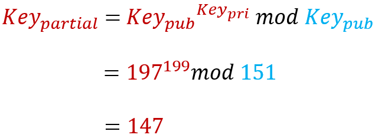
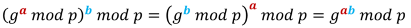
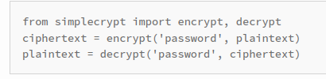
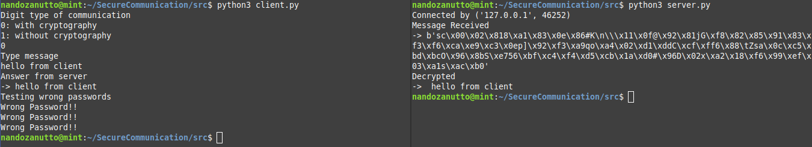
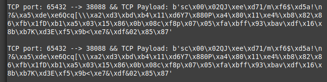
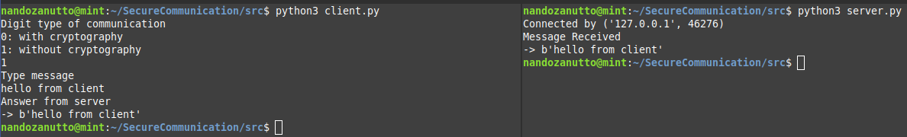
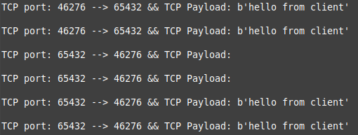

Relatório
6 de agosto de 2021

Para representar as duas pontas da conexão foi criada uma classe "Communicator".
Esta classe tem como métodos "__init__", "generatePartialKey", "generateFullKey",
"encrypt_message" e decrypt_message" e como atributos "base", "module", "privateKey"
e "fullKey".
__init__: Para criar um objeto comunicador é necessário fornecer as duas chaves públicas,
aqui chamadas de 'base' e 'módulo', como no exemplo os números 197 e 151 respectivamente.
Um terceiro valor particular ao comunicador deve ser fornecido, a chave privada, no exemplo
o número 199. Com estes valores fornecidos o comunicador está pronto para criar sua chave
parcial.
generatePartialKey: Para calcular a chave parcial, eleva-se a base à chave privada e é
feito o módulo valor 'modulo' do resultado. Ou seja:
-> partialKey = self.base**self.privateKey
-> partialKey = partialKey%self.module
generateFullKey: Para calcular a chave inteira, é necessária a chave parcial do outro
comunicador, chamada aqui de partialKeyR (R de received). Eleva-se a partialKeyR à chave
privada e é feito o módulo valor 'modulo' do resultado. O código é o mesmo do método
generatePartialKey, porém com a chave parcial estrangeira.
Por que os comunicadores chegam à mesma chave inteira?
A troca de chave de Diffie-Hellman baseia-se na equação abaixo. Observe que as expressões em parênteses são chaves parciais recebidas.

Criptografia
Foi utilizada a biblioteca simplecrypt, cujo comportamento está resumido abaixo.

Portanto para encriptografar e descriptografar o comunicador deve usar sua chave inteira.
Comunicação
Servidor
Primeiro define-se as variáveis HOST e PORT, o endereço IP e a porta onde escutar a conexão, respectivamente. Foi usado o número de Loopback como Host, pois executamos o cliente e o servidor em apenas 1 máquina.
O comando 'socket.socket()' cria um objeto socket. Foi utilizado with-statement, então não há necessidade de fechar o socket com 's.close()'.
O comando socket.AF_INET em 'socket.socket(socket.AF_INET, socket.SOCK_STREAM)' especifica a abertura do socket para endereços IPv4. O comando socket.SOCK_STREAM especifica o uso do protocolo TCP.
O comando 'bind()' é usado para associar o socket ao host e port escolhidos. O comando listen() coloca o servidor para 'ouvir' possiveis conexões. O comando accept() aceita uma conexão e retorna um novo objeto socket e o endereço de quem conectou ao servidor.
A variável 'conn' guarda o objeto que o servidor irá utilizar para comunicar com o cliente.
O servidor é colocado em loop enquanto o cliente não finaliza a conexão. O comando conn.recv() lê dados enviados pelo cliente. O comando conn.sendall() retorna uma mensagem para o cliente.
Cliente
O estabelecimento de comunicação é muito semelhante. Define-se os valores Host e Port como o Ip do servidor e a porta utilizada pelo servidor, respectivamente.
É aberta a conexão com socket.socket(socket.AF_INET, socket.SOCK_STREAM). É solicitada uma conexão com o servidor no comando s.connect((HOST, PORT)). A variável 's' guarda o socket utilizado para comunicar com o servidor. Após isso, os comandos 's.sendall()' e 's.recv()' são utilizados para enviar e receber dados do servidor, respectivamente.
Comunicando com segurança
O valor da base (igual a 5) é conhecido pelo cliente e servidor antes da conexão acontecer. O valor da variável 'modulo' é defido pelo cliente aleatoriamente. Cria-se a chave parcial do cliente. É enviado o valor de 'modulo' para o servidor, que cria sua chave parcial e a retorna para o cliente. O cliente então envia sua chave parcial.
Neste momento, o cliente e o servidor receberam sua chave parcial estrangeira. Então estes criam suas chaves inteiras.
Após isso, é digitada uma mensagem pelo usuário do cliente que é transformada em uma mensagem criptografada utilizando a chave inteira. A mensagem transformada é enviada ao servidor. Para assegurar ao cliente que sua mensagem foi descriptografada corretamente, o servidor descriptografa a mensagem e a lê, criptografa de novo e envia a mensagem transformada. O cliente então descriptografa e checa se a mensagem recebida é igual à mensagem enviada.
Testes de execução
Os testes abaixo comparam uma comunicação criptografada com uma comunicação normal. Do lado esquerdo o cliente, do lado direito o servidor. E abaixo está a leitura dos pacotes feita por um usuário malicioso que está 'sniffando' a rede, ou seja, está usando algum sniffer que verifica todos os pacotes TCP que chegam no loopback.
Teste 1


Neste teste o usuário faz uma comunicação com criptografia. Observe que o usuário malicioso só tem acesso à mensagem criptografada e as chaves parciais. Porém, sem a chave inteira não é possível recuperar
a mensagem original. No fim da comunicação é feito um teste para verificar a integridade da criptografia, utilizando chaves aleatórias. Observe que nenhuma delas conseguiu descriptografar a mensagem, recebendo o output "Wrong Password!!"
Teste 2


Neste teste o usuário opta por uma comunicação sem criptografia. Observe que a mensagem pode ser facilmente interceptada por um usuário malicioso, já que a mensagem original é passada pelo socket.